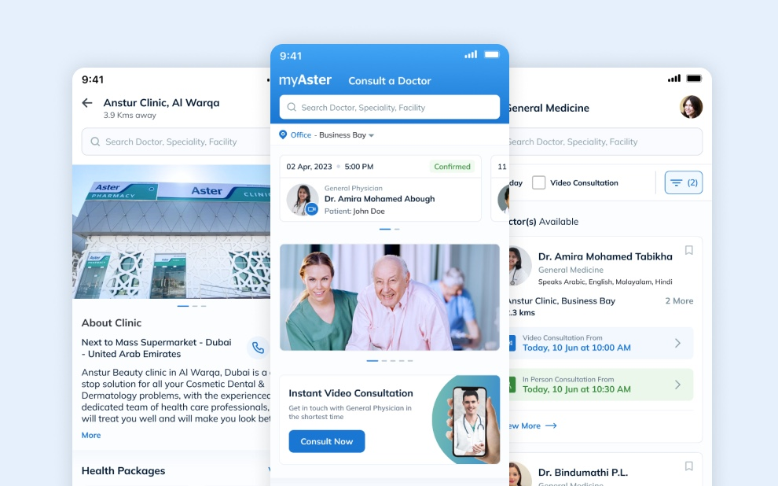
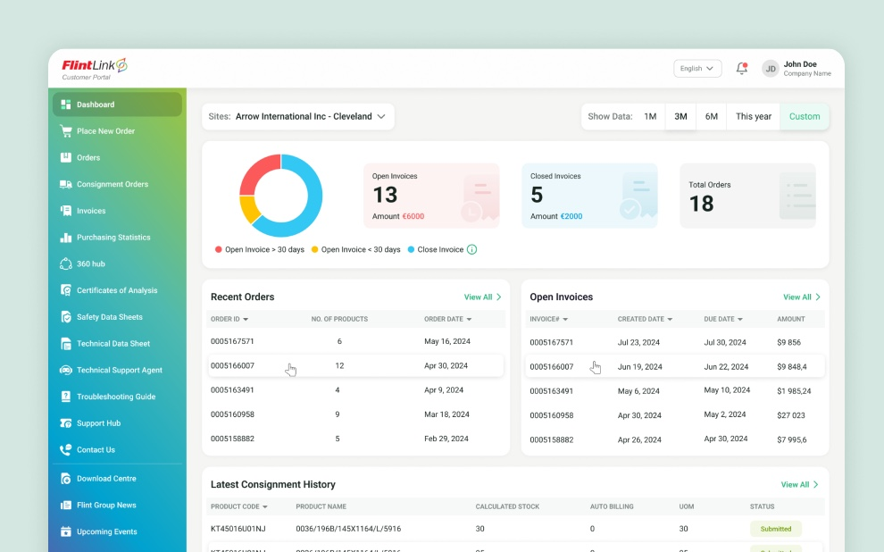
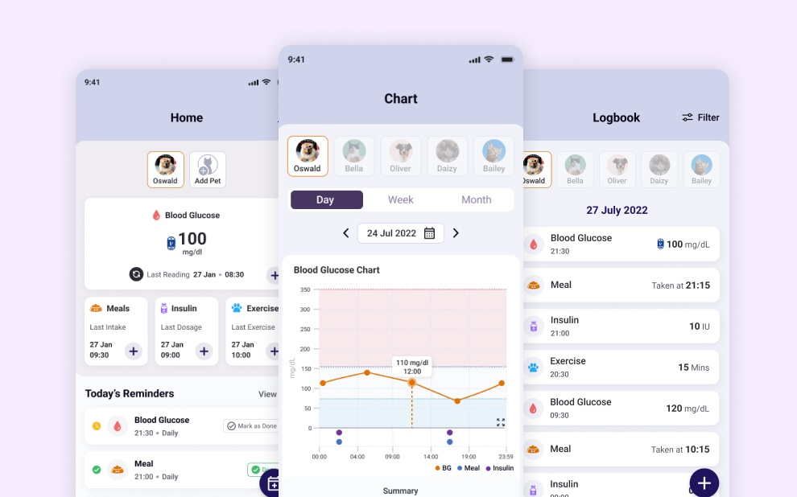
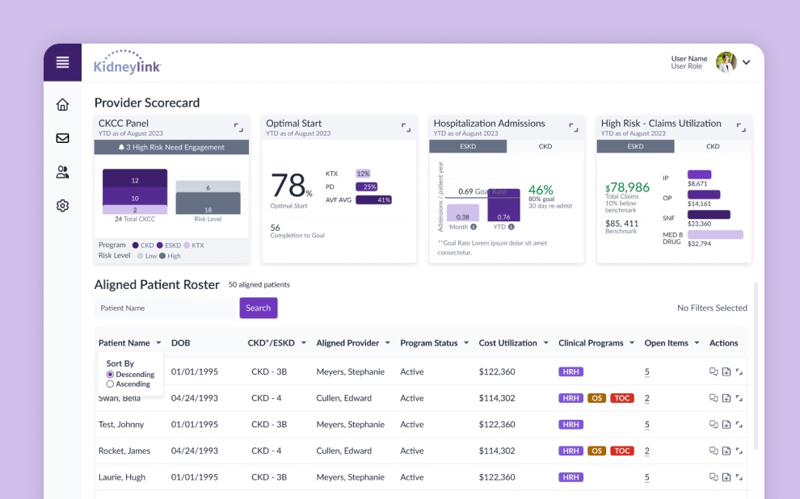
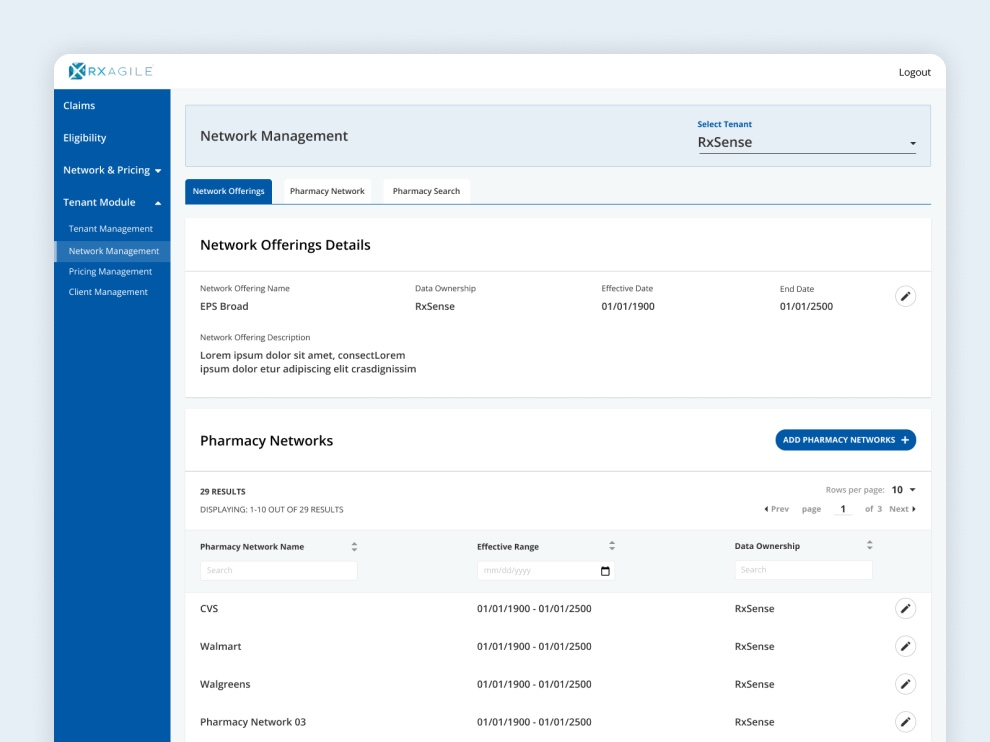
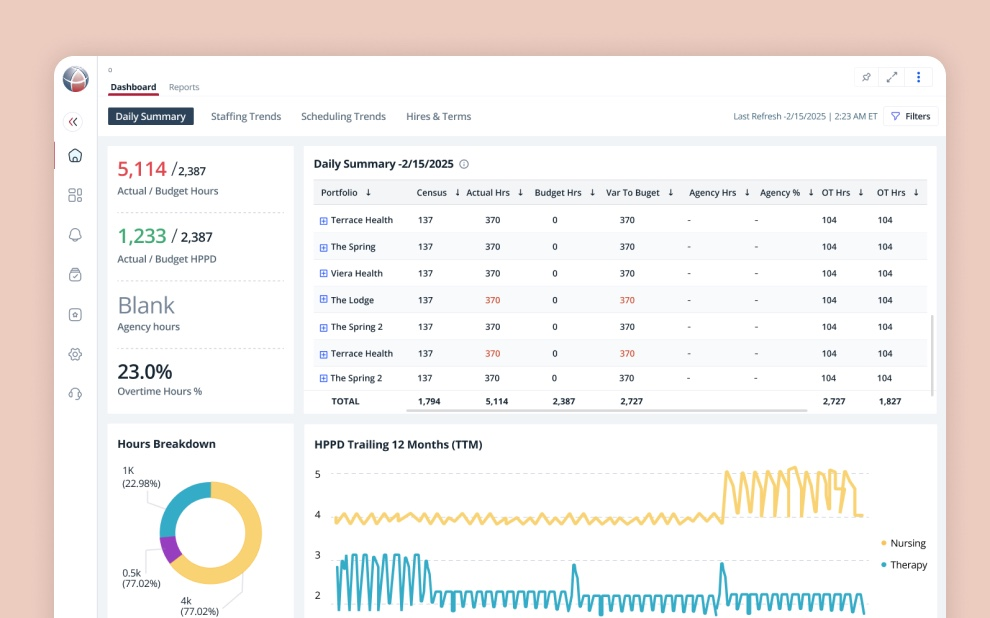

I ask boring questions until the product gets simple.
Lead designer for complex B2B enterprise systems and B2C consumer products — healthcare, pharmacy benefits, EV charging, logistics, fintech and e-commerce. 10+ years, mostly in regulated, messy systems.
Selected work
Six products. Each one is a delta.

Six services, six accounts, six checkouts — and a patient who should only have to set up their family, ID and insurance once.
One account, one checkout and one identity model serving all six services.
What failed first[placeholder — what you tried first on myAster]
Read the case study
The portal was organised around documents; customers think in orders.
Account manager time returned, per person, previously spent retrieving documents.
What failed firstI built a document-type IA because every competitor had one. It fell apart the first time someone looked for a document tied to a delivery.
Read the case study
The analyser holds seven days of readings. Miss a week of syncing and the data is gone.
Time to log one glucose reading, one-handed, with the pet and time pre-filled.
What failed firstI designed a seven-step onboarding and believed in it. Most people never reached the end.
Read the case study
Patient data sat across disconnected systems and arrived without context, so risk was discovered after admission instead of before it.
Comprehension on the eGFR task, after one plain-language line replaced the detailed chart.
What failed firstMy first design failed round one of testing.
Read the case study
A pharmacy-benefits administration platform built from scratch, in a domain I had to learn before I could design anything in it. Errors measured from [baseline].
Client onboarding errors after launch, measured against [baseline].
What failed firstSix weeks and eight interviews in, one sentence revealed an entire user type I had designed nothing for.
Read the case study
Executives made staffing decisions from reports an analyst assembled by hand across four systems, arriving three days late.
Report turnaround at the pilot client, previously assembled by hand across four systems.
What failed firstOur first IA grouped reports by data source. In testing, nobody could find anything.
Read the case studyAbout
Self-taught, still curious, mostly patient.
I'm Deep, a self-taught Senior UI/UX Designer based in Ahmedabad, India. I came up through graphic design and got pulled into UI/UX when I got more interested in why people use things than in how they look.
Ten years, and the industries keep changing: healthcare, EV charging, print and delivery logistics, fintech, e-commerce. Enterprise B2B one quarter, consumer apps the next, on web, iOS and Android. What stays the same is the job: learn the business fast, then design something the client's engineers can build.
That means running client conversations, aligning stakeholders who want different things, turning a rough brief into a product strategy, and leading a team through to developer handoff. I build scalable design systems, prototype in code to shorten the path from idea to release, and keep the work close enough to engineering that what I design is what actually ships.
I'd rather look slow for two weeks than design confidently in the wrong direction for two months.
Mentoring
150+ designers, on portfolio reviews, career growth and craft.
Outside client work I mentor designers around the world. I'm in the top 1% on ADPList, where I've mentored 150+ designers on portfolio reviews, career growth and improving their craft.
Book a session on ADPList150+
Designers mentored
Top 1%
Mentor on ADPList
24
ADPList achievements
Deep provided outstanding guidance on my resume and portfolio, offering specific feedback and examples that will enhance my work. He was able to understand my background experience and guide me through the next steps in my career. I highly recommend booking with him for an exceptional experience!
Contact
Have a role in mind? Let's talk.
Open to Senior and Lead roles across B2B enterprise systems and B2C consumer products — healthcare, pharmacy benefits, EV charging, logistics, fintech and e-commerce — remote or relocating anywhere in India.
thedeepvyas@gmail.com Copy